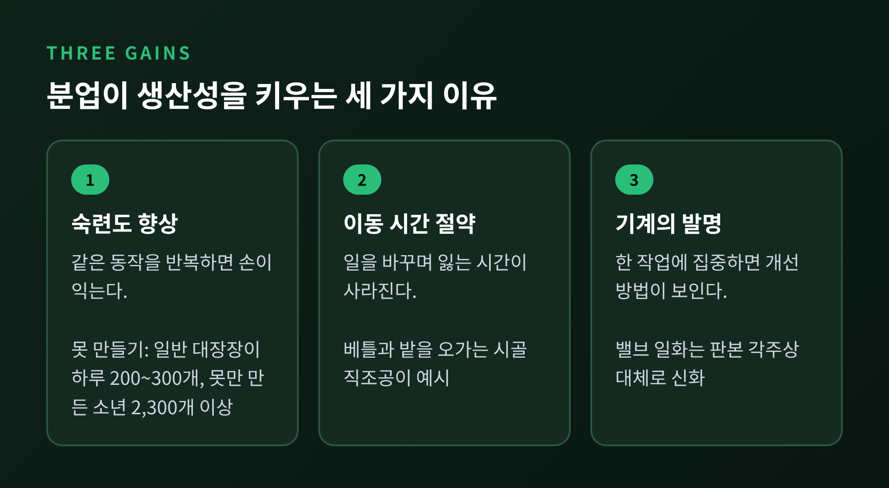
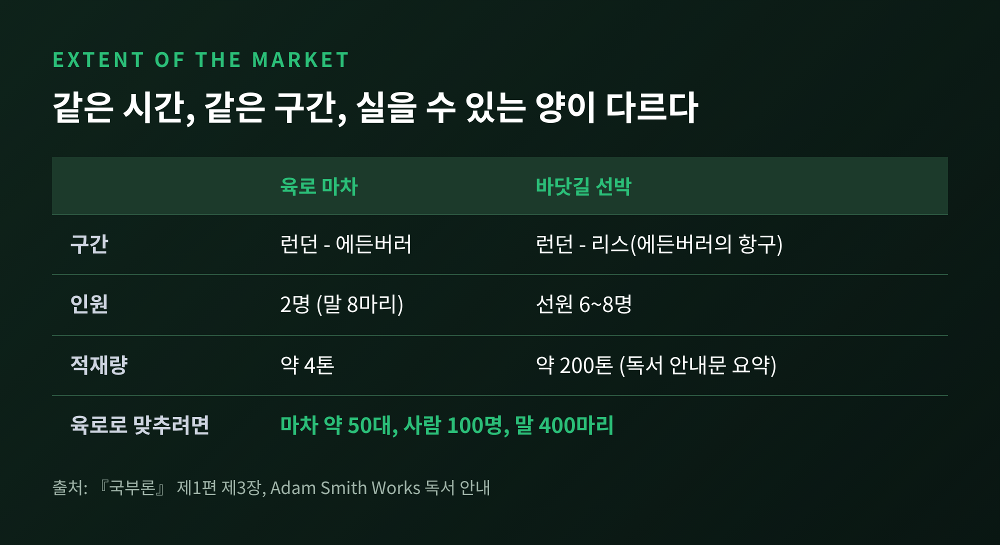
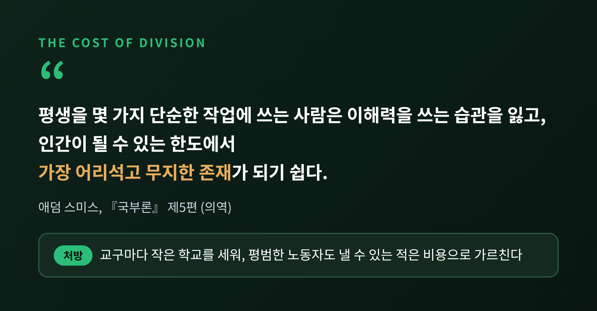
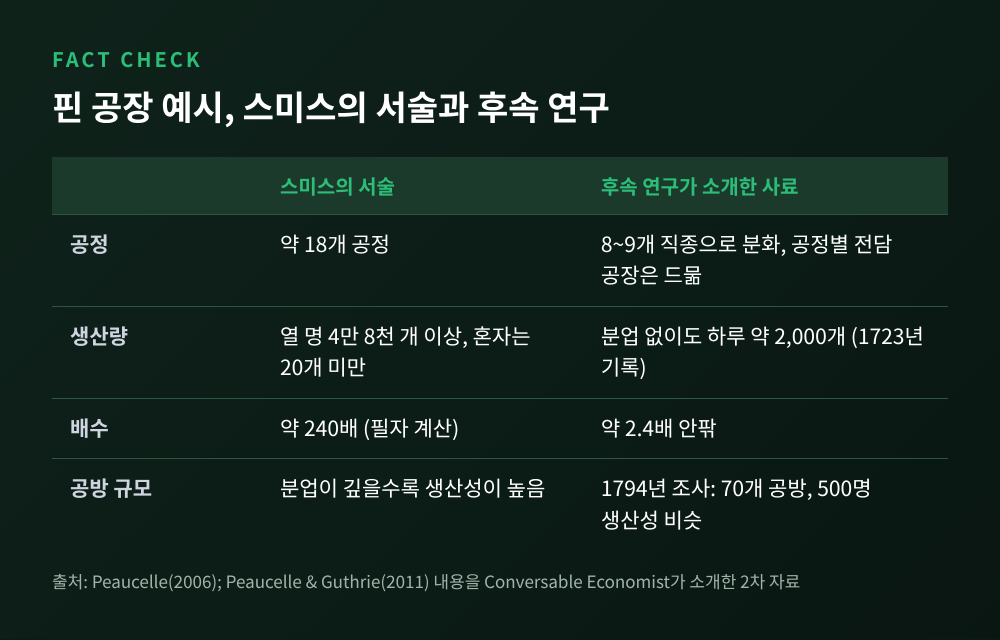
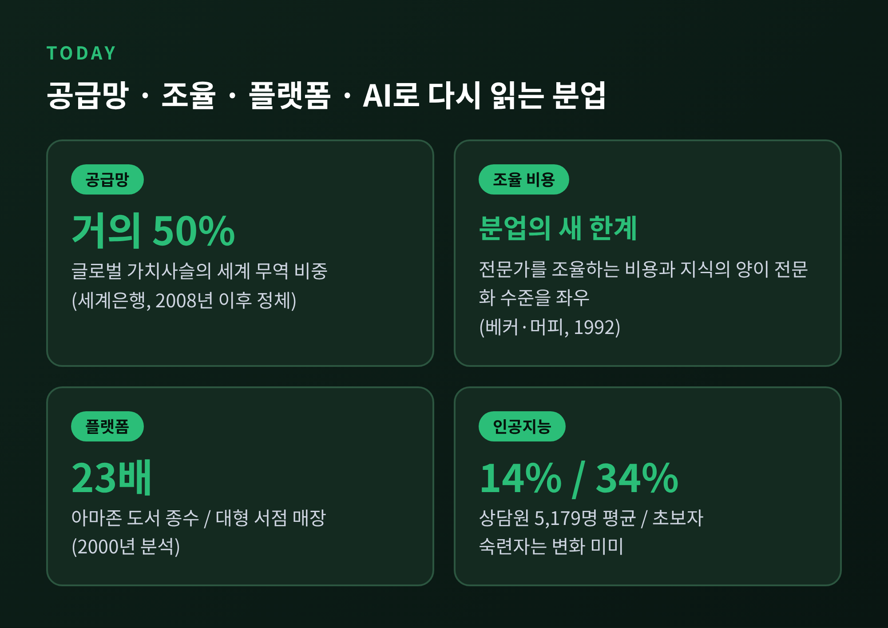

애덤 스미스 분업론, 핀 공장 10명이 하루 4만 8천 개를 만든 이유

한 줄 요약
- 스미스는 『국부론』 첫 장에서 핀 열 명이 하루 4만 8천 개 이상을 만든다고 썼습니다. 혼자라면 스무 개도 어렵다는 것입니다.
- 분업이 생산성을 키우는 이유는 숙련도, 시간 절약, 기계 발명 세 가지입니다.
- 분업은 시장이 클수록 깊어지고, 스미스는 그 대가로 노동자의 정신이 무뎌지는 문제도 짚었습니다.
오늘은 애덤 스미스의 『국부론』에 나오는 분업과 핀 공장 이야기를 정리해 보려 합니다. 이 숫자가 정확히 무엇을 말하는지, 어디까지 믿어도 되는지를 원문과 후속 연구로 확인했습니다. 마지막에는 공급망과 플랫폼, 인공지능 시대에 이 오래된 논리가 어떻게 읽히는지도 살펴봅니다.
핀 공장 숫자, 원문에는 이렇게 적혀 있습니다
『국부론』은 1776년에 나왔고, 제1편 제1장의 제목이 바로 「분업에 대하여」입니다. 스미스는 이 장을 "노동 생산력의 가장 큰 개선은 분업의 결과인 듯하다"는 취지의 문장으로 엽니다. 그리고 곧바로 "아주 사소한 제조업", 핀 만들기를 예로 듭니다.
스미스가 묘사한 핀 만들기는 약 18개의 공정으로 나뉩니다. 한 사람은 철사를 뽑고, 다른 사람은 곧게 펴고, 셋째는 자르고, 넷째는 끝을 뾰족하게 합니다. 그는 이런 작은 공장에서 열 명이 일하는 모습을 본 적이 있다고 적었습니다.
수치는 이렇습니다. 열 명이 열심히 하면 하루에 약 12파운드의 핀을 만듭니다. 1파운드에 중간 크기 핀이 4천 개 넘게 들어가니, 모두 4만 8천 개 이상입니다. 한 사람당 4,800개꼴입니다.
반면 이 일에 숙련되지 않은 사람이 혼자 한다면 어떨까요. 스미스는 "온 힘을 다해도 하루에 한 개를 만들기 어렵고, 스무 개는 분명 만들 수 없을 것"이라고 썼습니다. 스무 개를 기준으로 삼아도 4,800개는 240배입니다. 이 배수는 스미스가 직접 말한 것이 아니라 두 숫자를 나눠 본 값입니다.
한 가지 짚어 둘 점이 있습니다. '20개'는 측정값이 아닙니다. 숙련되지 않은 사람이 혼자 하면 이 정도도 못 할 것이라는 스미스의 추정입니다. 반대로 '열 명, 4만 8천 개'는 본 적이 있다는 목격 진술입니다. 둘의 성격이 다르다는 점을 기억해 두시면 좋겠습니다.
분업이 생산성을 키우는 세 가지 이유
스미스는 분업의 이득을 세 갈래로 나눕니다.
첫째는 노동자 각자의 숙련도입니다. 같은 동작을 반복하면 손이 익습니다. 스미스는 못 만들기를 예로 들었습니다. 평소 못을 만들지 않던 대장장이는 하루에 200~300개를 넘기기 어렵지만, 못만 만들어 온 소년들은 각자 하루 2,300개 이상을 만든다고 했습니다.
둘째는 일을 바꾸며 잃는 시간을 아끼는 것입니다. 작은 농장을 겸하는 시골 직조공은 베틀에서 밭으로 옮겨 다니며 많은 시간을 흘려보냅니다. 한 가지 일만 하면 이 틈이 사라집니다.
셋째는 일을 쉽게 만들어 주는 기계의 발명입니다. 한 가지 단순한 작업에 주의를 쏟는 사람은 그 일을 줄일 방법을 찾기 쉽다는 논리입니다. 스미스는 증기기관의 밸브에 끈을 묶어 스스로 여닫게 만든 소년의 일화를 들었습니다. 다만 인용한 판본의 각주는 이 일화가 대체로 신화에 가깝다고 적고 있습니다.

숫자만 보면 분업이 마법처럼 보일 수 있습니다. 그러나 스미스의 설명은 소박합니다. 손이 익고, 시간이 덜 새고, 도구가 나아집니다. 이 세 가지가 겹쳐 열 명의 공장을 한 사람의 수백 배로 만든다는 이야기입니다.
시장이 작으면 분업도 멈춥니다
그렇다면 분업은 어디까지 깊어질 수 있을까요. 스미스는 제1편 제3장에서 답합니다. 분업은 교환하는 힘에서 나오므로, 분업의 범위는 시장의 크기가 정한다는 것입니다. 내다 팔 곳이 좁으면 한 가지 일에만 매달릴 이유가 없습니다.
그는 스코틀랜드 고지대를 예로 들었습니다. 인구가 드문 곳에서는 모든 농부가 자기 가족을 위한 푸주한이고 빵 굽는 사람이고 양조업자여야 합니다. 짐꾼 같은 직업은 큰 도시에서나 생계가 됩니다.
운송의 차이도 시장을 가릅니다. 런던과 에든버러 사이를 말 여덟 마리가 끄는 마차는 약 4톤을 나릅니다. 같은 시기에 런던과 에든버러의 항구 리스 사이를 오가는 배는 선원 6~8명으로 훨씬 많은 짐을 실었습니다. 한 독서 안내문은 이를 약 200톤으로 요약합니다. 같은 양을 육로로 나르려면 마차 약 50대, 사람 100명, 말 400마리가 필요하다는 계산입니다.

그래서 스미스는 산업이 해안과 항해 가능한 강변에서 먼저 발달한다고 보았습니다. 이집트의 나일 강 운하, 벵골의 갠지스 강이 그의 예입니다. 시장이 넓어져야 전문화가 가능하고, 전문화가 되어야 값이 내려가 시장이 더 넓어집니다. 이 순환이 스미스 분업론의 뼈대입니다.
후대 경제학자들이 이 명제를 검증하기도 했습니다. 조지 스티글러는 1951년 같은 제목의 논문으로 이를 검증 가능한 이론으로 다뤘고, 프랑스 도시를 분석한 연구는 희소한 직업이 큰 도시에 몰려 있다는 예측을 강하게 지지했습니다.
스미스가 직접 적어 둔 분업의 대가
흔히 스미스를 분업의 찬양자로만 기억합니다. 그러나 같은 책 제5편에서 그는 반대편의 장부도 적었습니다.
평생을 몇 가지 단순한 작업에 쓰는 사람은 이해력을 발휘하는 습관을 잃고, "인간이 될 수 있는 한도에서 가장 어리석고 무지한 존재"가 되기 쉽다고 썼습니다. 생산성의 이면에 노동자의 정신이 무뎌지는 비용이 있다고 본 것입니다.
그는 방치하자고 하지 않았습니다. 모든 교구나 구역에 작은 학교를 세우고, 평범한 노동자도 감당할 만한 적은 비용으로 아이들을 가르치게 하자고 제안했습니다. 교사의 보수는 일부만 공공이 대어, 가르치는 일을 게을리하지 않도록 하자는 구상이었습니다.

분업의 이득과 비용을 같은 사람이 함께 적었다는 점이 중요합니다. 스미스는 효율을 말하면서도 효율의 값을 치르는 사람을 잊지 않았습니다.
핀 공장 예시는 얼마나 믿을 수 있을까
이 이야기에는 후일담이 있습니다. 프랑스 연구자 Peaucelle의 2006년 연구는 스미스의 핀 서술이 디드로의 『백과전서』 한 항목만으로는 설명되지 않는다고 주장했습니다. 이후 연구는 프랑스 문헌 네 편을 조합했다고 정리합니다.
더 불편한 지적도 있습니다. 소개된 사료에 따르면 당시 노동자는 8~9개 직종으로 나뉘었고, 18개 공정마다 전담자를 둔 공장은 드물었습니다. 1794년 프랑스 한 지역의 조사에서는 70개 공방, 500명의 핀 제조공의 생산성과 임금이 공방 규모와 무관하게 비슷했습니다. 1723년 기록을 기준으로 삼으면 분업 없이도 하루 약 2,000개를 만들 수 있어, 생산성 증가는 240배가 아니라 2.4배 안팎이라는 계산도 나옵니다.

물론 반론도 있습니다. 예시가 부정확해도 분업의 논지는 여전히 유효하다는 평가가 있습니다. 반면 생생하지만 불완전한 사례는 약점을 알고 써야 한다는 입장도 있습니다. 저는 두 입장 모두 일리가 있다고 생각합니다. 핀 공장의 숫자는 증명이 아니라 설명의 도구로 읽을 때 가장 안전합니다.
공급망, 플랫폼, 인공지능에서 다시 읽기
스미스의 핀 공장은 오늘날 공장 담장을 넘었습니다. 세계은행의 『세계개발보고서 2020』은 글로벌 가치사슬이 세계 무역의 거의 50%를 차지하며, 1990년 이후 무역 급증을 이끌었다고 설명합니다. 다만 2008년 이후에는 확장이 정체 상태라고도 덧붙입니다. 한 나라 안의 공정 분할이 국경을 넘는 분할이 된 셈입니다.
분업이 깊어지면 조율이 숙제가 됩니다. 게리 베커와 케빈 머피는 1992년 논문에서 전문화의 정도가 시장 크기만이 아니라 전문가들을 조율하는 비용과 지식의 양에도 좌우된다고 주장했습니다. 시장이 넓어도 조율 비용이 크면 분업은 멈춥니다.
플랫폼은 시장 크기의 한계를 낮췄습니다. 2000년 온라인 서점을 분석한 연구는 상품 다양성 증가가 소비자 후생을 7억 3,100만~10억 3천만 달러 키웠고, 이는 가격 인하 효과의 최소 5배라고 추정했습니다. 아마존의 도서 종수는 전형적인 대형 서점 매장의 23배였습니다. 희소한 취향도 팔릴 만큼 시장이 넓어진 것입니다.
인공지능은 분업의 첫째 이득인 숙련도를 흔듭니다. 고객 지원 상담원 5,179명을 분석한 연구에서 생성형 AI 도구는 시간당 해결 건수를 평균 약 14% 높였고, 초보자는 약 34% 올랐지만 숙련자는 거의 변화가 없었습니다. 한 기업의 한 직종 연구이므로 일반화는 조심해야 합니다. 그래도 반복으로 쌓던 숙련의 일부를 도구가 빌려주기 시작했다는 신호로는 읽을 만합니다.

정리하면 이렇습니다. 분업은 숙련, 시간, 기계라는 세 갈래로 생산성을 키우고, 그 깊이는 시장의 크기가 정합니다. 핀 공장의 숫자는 후속 연구로 흔들렸어도 이 논리 자체는 250년 가까이 살아남았습니다.
"분업은 시장만큼 깊어지고, 그 값은 일하는 사람이 치른다."
스미스가 학교를 말했던 이유를 지금의 우리에게 되물어 본다면, 도구가 일을 쪼개는 시대에 사람이 무엇을 배워야 하는지가 아닐까 싶습니다.
※ 이 글은 경제 개념과 연구를 소개하는 정보 글이며, 특정 투자나 상품을 권하지 않습니다.